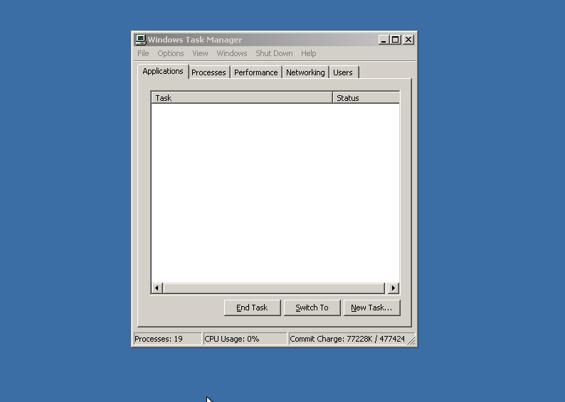
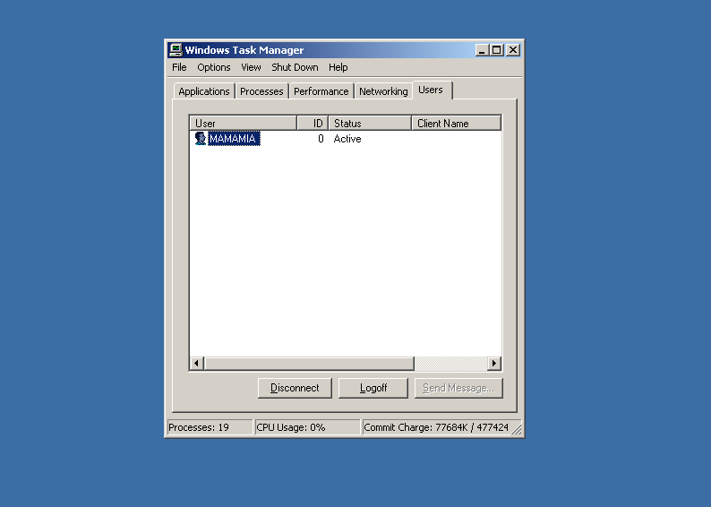
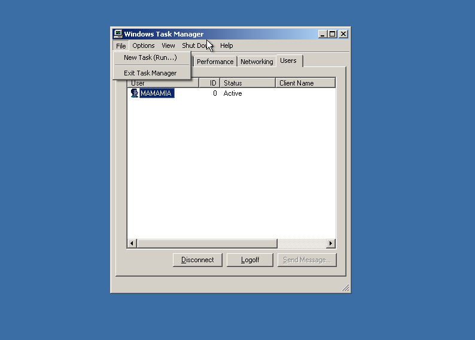
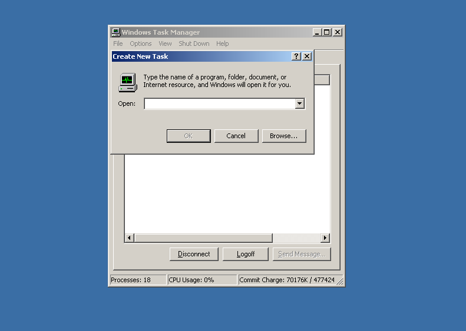
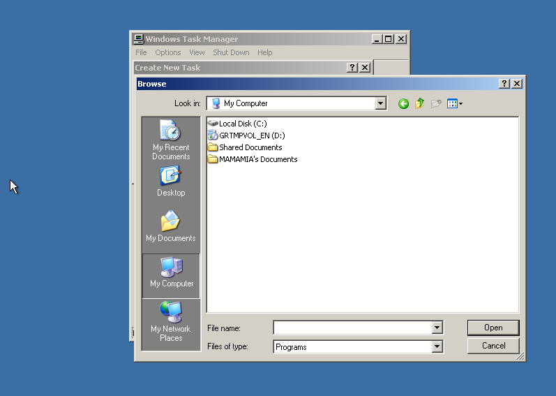
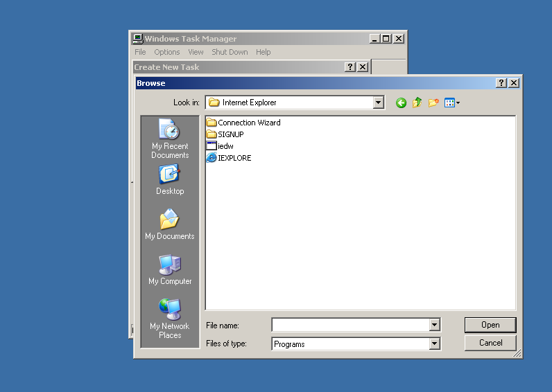
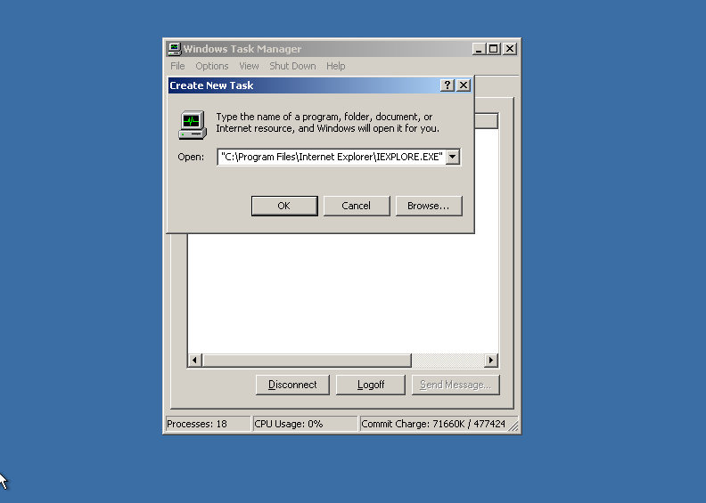
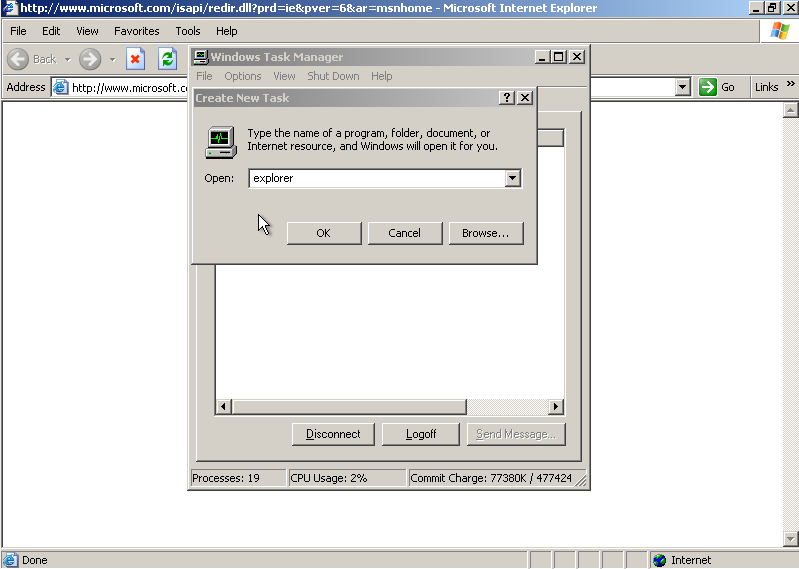

1: Para empezar ocupas teclado y muse para su facilidad, presionamos en el teclado "Ctrl","Alt" y "Supr o Delete" a la vez.
2: Una vez con el administrador de tareas abierto seleccionamos usuarios o users dependiendo del lenguaje
3: Seleccionamos "Files" y "New Task(Run...)" con el usuario seleccionado
4: Va a salir una barra de texto, abajo abra 3 botones"OK, Cancel, Browse", Seleccionamos Browse
5: Seleccionamos "My Computer"
6: Seleccionamos "Disco local C:"
7: Seleccionamos "Program Files"
8: Seleccionamos "Internet explorer"
9: Seleccionamos "IEXPLORE"
10: Presionamos "OK"
11: Al poner ok volvemos a hacer el peso 3, pero escribes "explorer"
